Grafana Guide: Variables, Filters and Repeats
|
This content was generated with the assistance of AI and should be verified against the official documentation before being relied on in production. |
Checked on 2026-11-11 against Grafana 13.3.x.
What you build
You add five variables to the dashboard Bookshelf (guides): Application and Route, two chained query variables whose values come from Prometheus, a custom variable Percentile, an interval variable Window and a data source variable ds. You also add a Filter and Group by control. A new time series panel uses the variables in its data source, its query and its title, and Grafana repeats it once for each route you select.
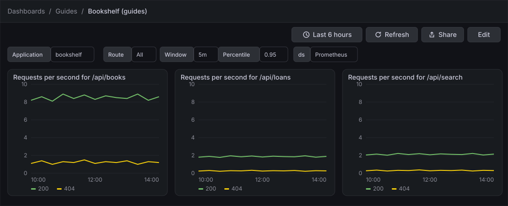
Before you start
-
Start the Grafana profile of the hands-on lab and wait about a minute:
cd lab docker compose --profile grafana up -d -
Open http://localhost:3000, sign in as
adminwith the passwordadmin, and click Skip when Grafana 13.3 asks you to update the default password. -
Do the earlier guides in this series, at least Create a dashboard and the first panel, which creates the dashboard Bookshelf (guides) in the folder Guides.
-
The data source Prometheus is provisioned by the lab and is the default data source. The load generator runs in its default mode and gives the queries traffic to draw.
-
The guide was checked on Grafana Enterprise 13.3.0 (the free image, no licence key). Editing dashboards needs the Editor or Admin role of the organization;
adminhas it. -
The figures are drawings of the Grafana 13.3 user interface, not screenshots, so small details can differ from your screen. A highlighted box with a number marks the control of the step with the same number.
Steps
In Grafana 13.3 the variable settings no longer have a tab of their own: the Variables tab of the dashboard settings only says that they have moved to the dashboard sidebar. The sidebar pane opened by the Options icon lists Filters, Variables, Annotations and Links, each with a plus button, and the old ad hoc filters are the Filter and Group by control of Filters. The edit toolbar, the sidebar and the panel editor are drawn on the screen maps of the guide Create a dashboard and the first panel; come back to them when a control is not where a figure shows it. The forms of the Custom, Interval and Data source variables and the Repeat options are drawn from the names Grafana gives them; if a label differs on your screen, pick the closest entry.
Open the variables pane
-
In the left navigation, click Dashboards, then open the folder Guides and the dashboard Bookshelf (guides).
-
Click Edit.
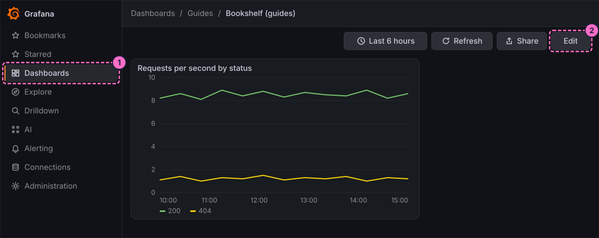
-
In the icon strip of the right sidebar, click Options.
-
In the pane Dashboard, click the plus button next to Variables.
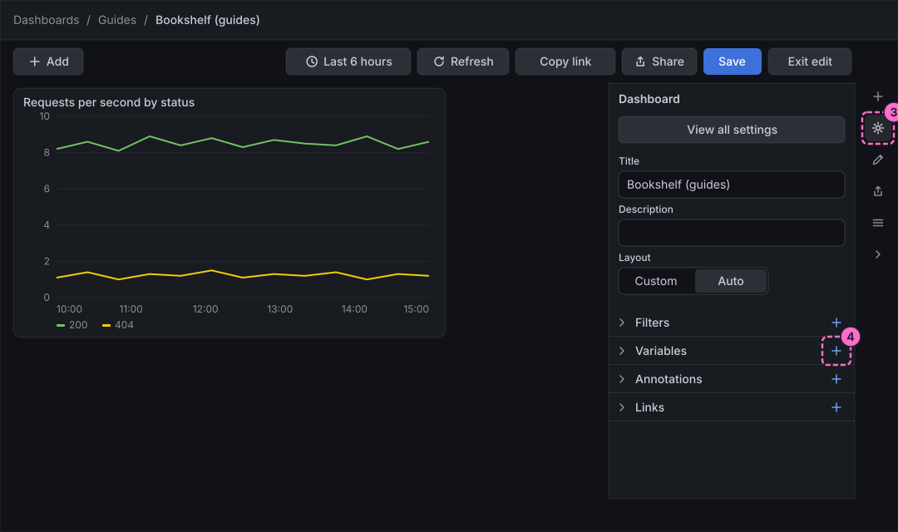
-
In the list Choose variable type, click Query ("Values are fetched from a data source query"). The list also offers Switch, a new type for a variable that is toggled on and off.
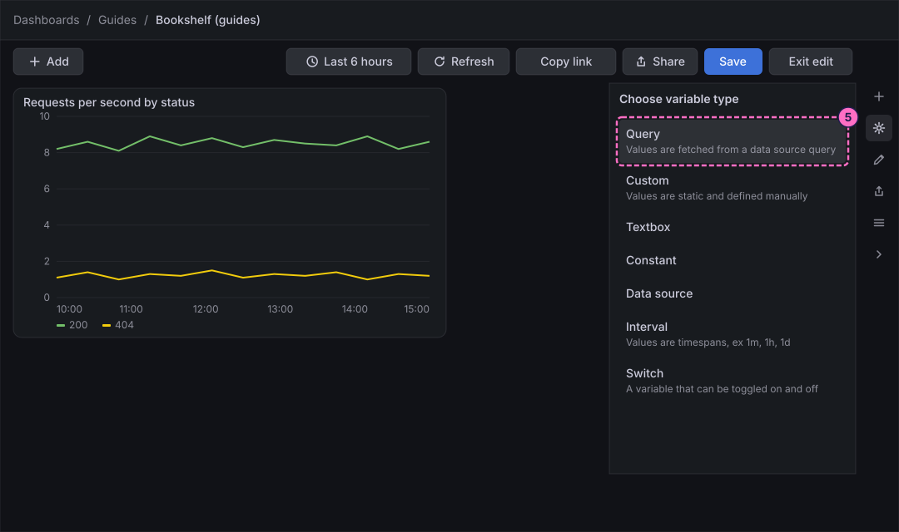
Create the Application and Route query variables
-
In the form Query variable, type
applicationin Name. -
Type
Applicationin Label. -
Under Query options, click Open variable editor.
-
In the editor, choose the data source Prometheus.
-
Set up the query so that it returns the values of the label
applicationof the metrichttp_server_requests_seconds_count. In the definition of the query this reads:label_values(http_server_requests_seconds_count, application) -
Close the editor.
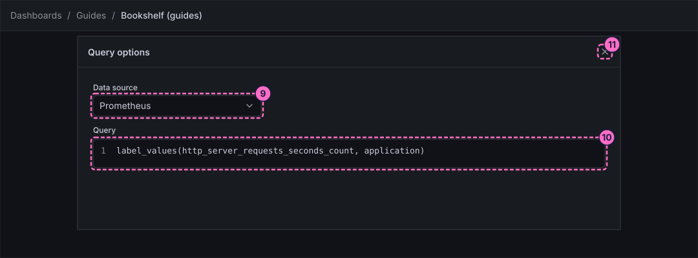
-
Click the plus button next to Variables again and choose Query.
-
Type
routein Name. -
Type
Routein Label. -
Click Open variable editor.
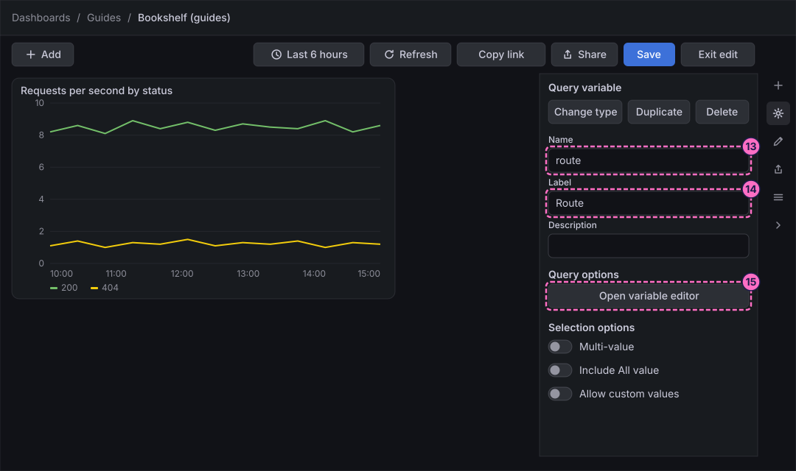
-
Choose Prometheus and set up the query so that it returns the values of the label
uri, filtered by the first variable. The query refers to the first variable as$application, which is what chains the two variables:label_values(http_server_requests_seconds_count{application="$application"}, uri) -
Close the editor.
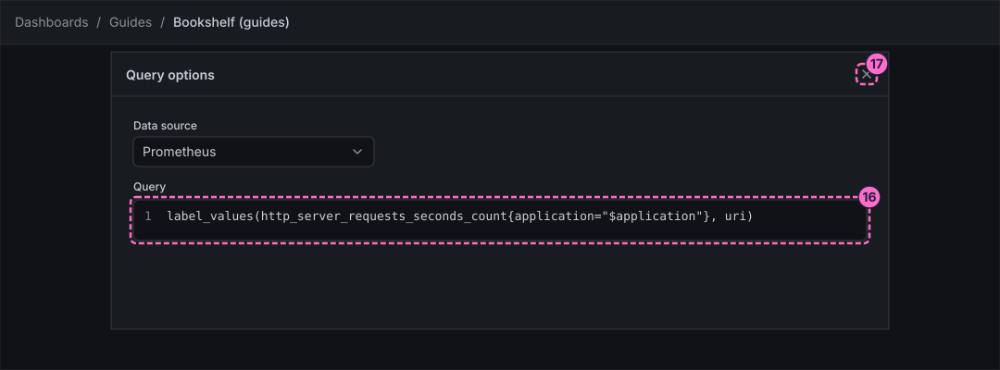
-
Under Selection options, switch on Multi-value.
-
Switch on Include All value, so that the control offers All next to the single routes.
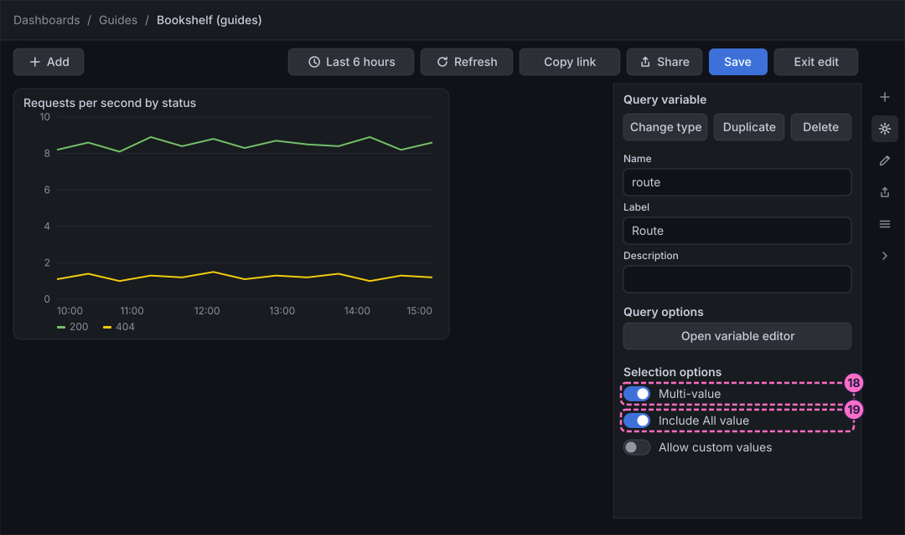
Add a custom, an interval and a data source variable
-
Click the plus button next to Variables and choose Custom.
-
Type
percentilein Name. -
Type
Percentilein Label. -
In the list of values, type
0.5,0.9,0.95,0.99. -
Click the plus button next to Variables and choose Interval ("Values are timespans, ex 1m, 1h, 1d").
-
Type
windowin Name. -
Type
Windowin Label. -
In the list of intervals, type
1m,5m,10m.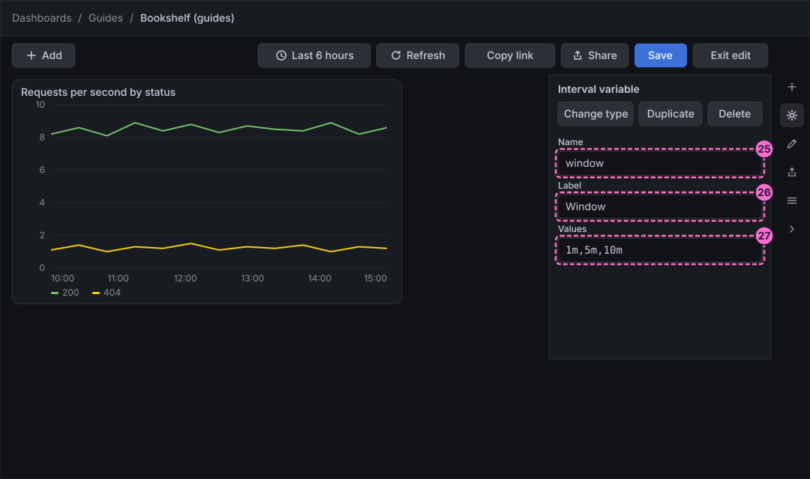
-
Click the plus button next to Variables and choose Data source.
-
Type
dsin Name. -
Choose the type Prometheus.
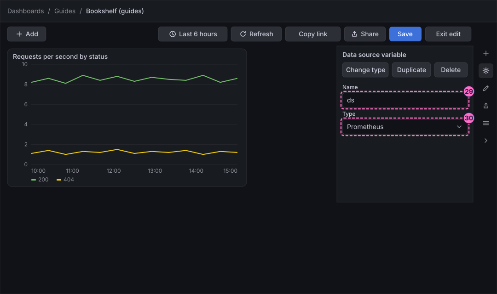
Add a Filter and Group by control
-
Click the plus button next to Filters.
-
For the new Filter and Group by entry, choose the data source Prometheus. The control now offers label filters and a group by for the queries of that data source.
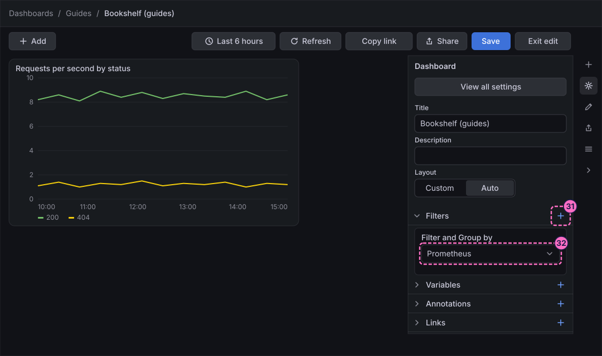
Use the variables in a panel
-
Click Add in the toolbar, click the Panel tile in the Add pane and click Edit visualization, as in the first dashboard guide.
-
Open the data source picker of query A and choose the variable
${ds}, which is listed with the data sources. -
Click Code in the Builder / Code switch.
-
Click inside the query editor first, so that it has the focus, then type the query on one line (the editor may wrap it):
sum by (status) (rate(http_server_requests_seconds_count{application="$application", uri=~"$route"}[$window])) -
Click Run queries.
-
Under Suggestions, click Time series.
-
In the options pane, under Panel options, type
Requests per second for $routein Title.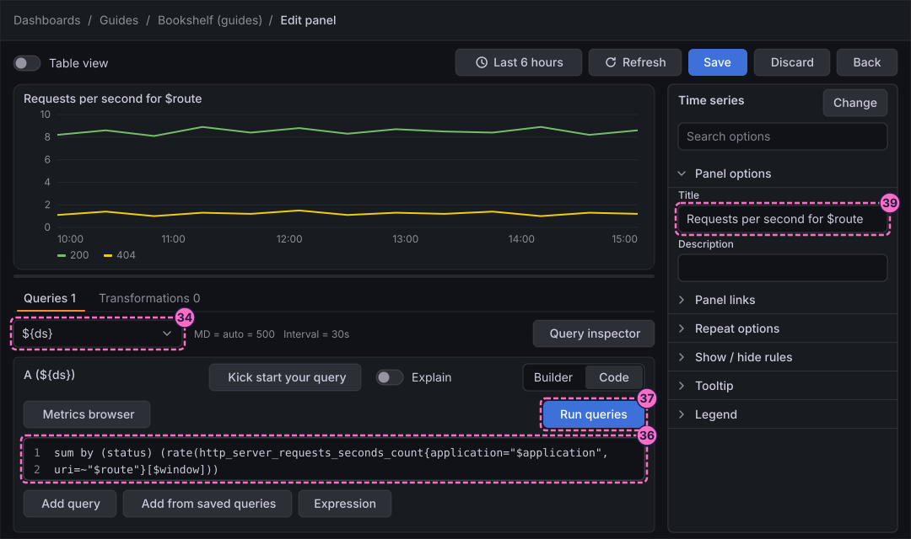
Repeat the panel for each route
-
In the options pane, open the category Repeat options.
-
Choose the variable
routeas the variable to repeat by.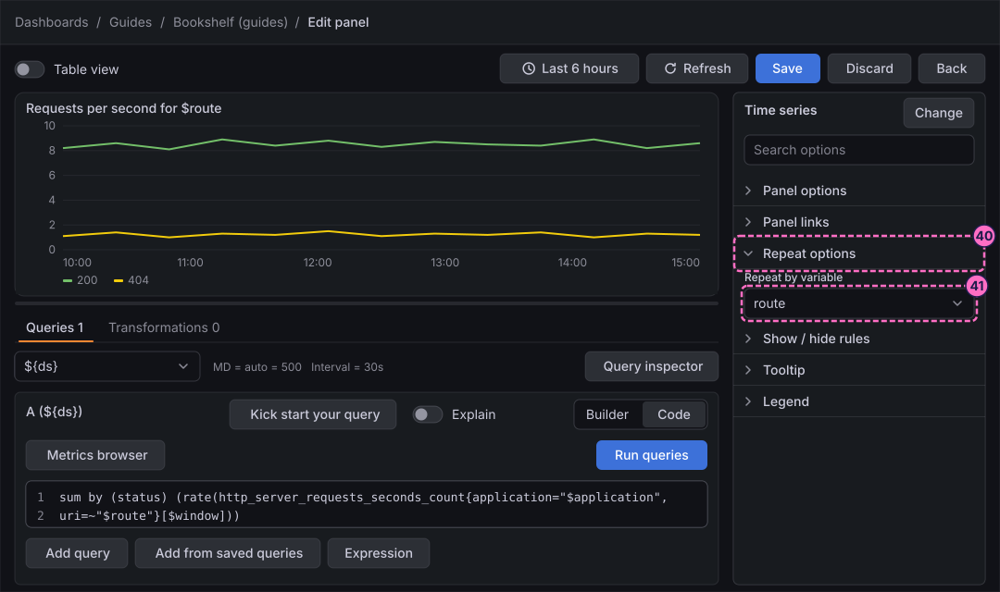
-
Click Save in the header of the editor.
-
In the Save dashboard drawer, click Save.
-
Click Back.
-
Click Exit edit.
-
If Grafana 13.3.0 shows the dialog Unsaved changes, click Save, and click Save again in the drawer that opens.
Check the result
Open Dashboards → Guides → Bookshelf (guides). The controls Application, Route, Window, Percentile and ds sit above the panels. In Route, select /api/books, /api/loans and /api/search; the panel Requests per second for $route is drawn once for each of them, and the title of every copy names its route. Choosing All draws one copy for each of the four routes of the Bookshelf service. Change Window to 1m and watch the lines get more jagged.
To try the Filter and Group by control, use it at the top of the dashboard to add a filter for the label status with the value 404, and see the lines for the other status codes disappear from the panels that use the data source Prometheus queries.
To see a new series appear in every copy, force errors, wait about a minute and press Refresh:
curl -X POST localhost:8090/mode/failingRestore normal traffic afterwards:
curl -X POST localhost:8090/mode/normalVariations
-
Repeat a whole row instead of a panel: in edit mode add a row from the Add pane under Group layouts, move the panel into the row, remove the repeat of the panel and choose the variable
routein the repeat options of the row. -
Use the custom variable in a latency query: put
$percentileas the first argument ofhistogram_quantileand$windowas the range ofrate, and choose another percentile in the control. -
Add a Switch variable (the new type of step 5) and use it to turn a part of a query on and off.
What can go wrong
| Symptom | Cause | Fix |
|---|---|---|
The Route control is empty |
The second variable asks for the routes of |
Pick a value in Application and press Refresh, or check that the query of Application returns |
The panel is not repeated |
The variable of the repeat is not multi-value, or only one route is selected. |
Switch on Multi-value and Include All value in the variable |
The panel says No data for |
The interval variable holds a value that is not a duration, such as an empty list entry. |
Open the variable |
The picker does not list |
The data source variable was not saved, or its type is not Prometheus. |
Open the variable in the sidebar and set the type Prometheus, then open the picker again. |
The title of a copy shows |
The panel is not repeated, so the variable is shown with all its values. |
Select the routes in Route and check the repeat options of the panel. |
Clean up
Keep the variables and the panel if you want to try the variations. To remove the panel, open the dashboard in edit mode, select it, click Delete in the Panel pane of the right sidebar and save the dashboard. A variable is removed from its form with Delete. The later guides in this series do not depend on them.
Where to go next
-
Previous guide: Transformations and expressions.
-
Next guide: Rows, tabs, layouts, annotations and links, which arranges the panels and connects dashboards.
-
Reference: Variables describes every variable type, the syntax and the formatting options.